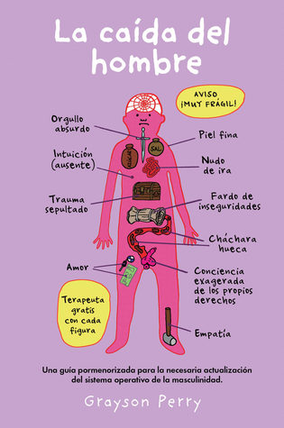

La Caída del Hombre
Reseña por Jorge I. Zuluaga

Ver reseña en GoodReads (necesita cuenta)
Después de mucho leer de feminismos y de conocer el que algunas expertas llaman “el problema del hombre” en la sociedad patriarcal, había estado esperando que algún autor, bien informado, plenamente consciente del problema, pero también desde su propia experiencia como hombre en el patriarcado, se tomara el trabajo de escribir una reflexión seria sobre el asunto.
¡Pues aquí está!
Este libro es una deliciosa combinación de un análisis serio sobre la masculinidad, especialmente la masculinidad tradicional, la masculinidad tóxica que, como muestran sobradamente las estadísticas de violencia y conflictos, es la fuente de muchos de los problemas que sufre nuestra sociedad, y una colección de anécdotas entre divertidas y muy tristes, acompañadas de ilustraciones geniales creadas por el mismo autor.
No se si se podría encontrar alguien más adecuado para el trabajo de analizar el problema de la masculinidad que Grayson Perry: un artista reconocido, travesti, hombre heterosexual, casado, orígenes en una familia de clase media baja, víctima de violencia infantil, hombre deconstruido y ampliamente ilustrado en el feminismo —como se revela a través de sus citas— y hoy un exitoso y reconocido profesional (es rector de una universidad en Londres).
Sería difícil encontrar una mejor combinación de características para darle salida al diagnóstico que Perry realiza en este librito (no tiene más de 150 páginas, se deja leer en un par de sentadas).
El resultado no puede ser mejor. O más perturbador.
Como el hombre heterosexual, casado y con hijos que soy, he representado durante la mayor parte de mi vida —y sigo representando aunque recientemente con más consciencia de los problemas que esto conlleva— el rol masculino que se me inculcó desde una edad que ni siquiera recuerdo. Soy incontinente verbal gracias a mis privilegios y sufro de estreñimiento emocional. Resuelvo muchos problemas con ira, malas palabras e insultos —aunque la mayoría solo los profiero desde el interior de un automóvil cerrado y solo logro dañarme a mi mismo—. Fui testigo de violencia contra las mujeres desde mi infancia y he tratado con violencia, aunque no física, al menos psicológica a hombres y mujeres a mi alrededor. He celebrado la guerra y me he hecho el loco frente al sufrimiento humano. No tengo amigos, no voy al psicólogo, he creído toda mi vida que, como hombre, debo ser absolutamente independiente, y que una relación de dependencia de otras personas es humillante o te limita —aunque la mayor parte de mi vida he dependido de otras, especialmente de mujeres, mi mamá, mis hermanas y ahora mi esposa.
En fin, he sido por la mayor parte de mis casi 50 años un hombre de vieja escuela, como nos llama Grayson Perry.
Afortunadamente, no me ha faltado la curiosidad intelectual, la capacidad de asombro y la admiración por la bondad de las personas, bondad que me ha faltado a mi; en el fondo llevo, como la mayoría de los hombres dañados del patriarcado, un niño asustado y sensible que llora disimuladamente en las películas y que de verdad quisiera tener más amigos. Por estas razones, sumadas al placer que me produce la lectura y no menos importante, al privilegio de tener una buena amiga que me aconseja con amor —la única que tengo, mi esposa—, he descubierto este tipo de lecturas que me han llevado a confrontar quien he sido. Afortunadamente también, he encontrado suficiente flexibilidad mental a mi edad para reconocer el problema y tratar de enmendarlo —aunque el mierdero que la masculinidad tóxica deja en el camino es difícil de borrar—.
En “La caída del hombre”, un juego de palabras que el autor utiliza para representar justamente cómo va quedando en el pasado la masculinidad que construyó cuidadosamente la historia para mantener una estructura de poder que invisibiliza y homogeniza, en especial a las mujeres, pero también a toda la diversidad humana, Grayson Perry aborda, entre muchos, los 3 aspectos más problemáticos de la masculinidad: el poder, los estereotipos de la masculinidad y la coraza —o la costra— emocional de la que nos rodeamos. Mientras lo hace, Perry cuenta, desde su propia experiencia —por eso creo que un libro así solo lo puede escribir un hombre, de la misma manera que un libro de feminismo solo lo puede escribir una mujer— las anécdotas que ilustran las problemáticas, pero al mismo tiempo ofrece increíbles recomendaciones sobre cómo podrían atacarse para buscar una sociedad mejor.
Después de que lo leímos en seguidilla, mi esposa, mi gran y única amiga, y yo, el libro quedó atestado de banderitas autoadhesivas que demuestran no solo lo novedoso e iluminador que resultó para nosotros lo leído, sino la increíble cantidad de frases, ideas y recomendaciones que salen de leer un libro como este.
A mi, personalmente, me deja, entre muchas otras, la tarea de conseguir un amigo, otro que no sea mi esposa —¿con quién puedo hablar cosas que no quiera hablar con ella?—, pero también la de buscar formas de curar el estreñimiento emocional que sufro desde hace décadas.
Escribir esta reseña, leer libros que en parte me incomoden o me saquen de mi zona de confort o pongan en evidencia mis privilegios, ha sido parte del proceso. Tal vez por eso es que lo disfruto tanto.
Quizás mis amigos, mis estudiantes o las personas que me siguen en redes sociales han notado el cambio; algunos incluso deben estar cansados de que ahora hable más de esto y lo haga con vehemencia; pero eso es parte de lo que debo hacer para “desestreñirme”. Si no les gusta, les aseguro que la alternativa, seguir siendo un hombre que sigue el guion tradicional del patriarcado, les gustaría mucho menos.
Lo he dicho con muchos libros similares que me han cambiado y lo repetiré con este: “La caída del hombre” debería ser una lectura obligada en escuelas, colegios o a lo sumo en universidades.
Como lo señala Perry y ahora estoy convencido y lo he conversado mucho con mi esposa, el problema de la masculinidad tóxica y el enquistamiento enfermizo del patriarcado, es un verdadero problema de salud pública que, como tal, solo se resuelve con políticas de salud pública, pero también con muuuuuuuuch educación. Este libro será instrumental para eso.
Seguiré leyendo.
PD. Publicaré un hilo en Twitter con algunas de las citas más interesantes del libro. Espero poner aquí el enlace cuando lo termine (y espero también que no sea una promesa vacía como las que hacen los políticos).